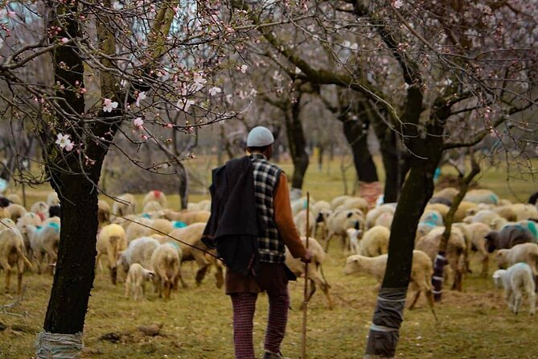
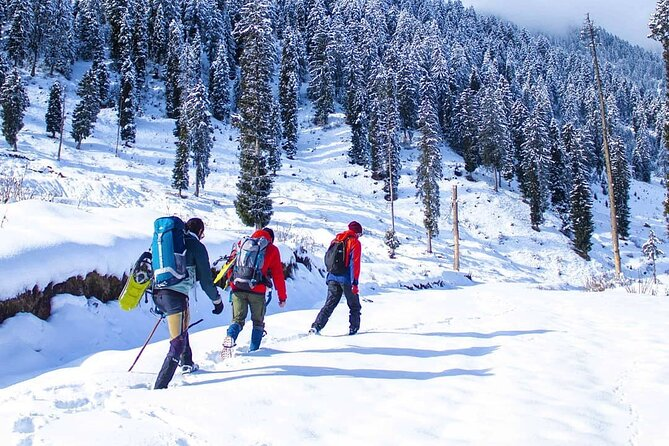

Highlights
- This Kashmir Tour is a fully loaded group holiday.
- Kashmir offers breathtaking landscapes, with lush valleys, snow-capped mountains, and crystal-clear lakes.
- The iconic Dal Lake in Srinagar offers scenic shikara (boat) rides and stays in traditional houseboats, adding a unique charm.
- Gulmarg transforms into a winter wonderland with opportunities for skiing, snowboarding, and gondola rides with stunning panoramic views.
- Asia's largest tulip garden in Srinagar blooms with vibrant colors in spring, drawing visitors from around the world.
- Sonmarg is an ideal location for outdoor activities like trekking, hiking, camping, and pony rides.
- Pahalgam and Sonamarg these popular hill stations are ideal for trekking, fishing, and picnics, showcasing Kashmir's serene beauty.




Kashmir Evergreen Tour - 5 Nights / 6 Days
Day 1: Arrival in Srinagar
- Arrival at Srinagar airport and transfer to hotel or houseboat.
- Relaxation by the serene beauty of Dal Lake.
- Optional: Shikara ride on Dal Lake and exploration of floating gardens and markets.
- Overnight stay at a hotel in Srinagar.
Day 2: Srinagar to Gulmarg
- After breakfast, proceed to Gulmarg, known for scenic beauty and skiing opportunities.
- Cable car ride (Gondola) to the top of the mountain for panoramic views.
- Overnight stay at a hotel in Gulmarg.
Day 3: Gulmarg to Pahalgam
- Travel to Pahalgam, known as the "Valley of Shepherds," surrounded by pine forests and rivers.
- Visit to Betaab Valley and Aru Valley, offering breathtaking landscapes.
- Leisure time for nature walks or a short trek.
- Overnight stay at a hotel in Pahalgam.
Day 4: Pahalgam to Sonamarg
- Morning travel to Sonamarg, the "Meadow of Gold."
- Picnic by the Sindh River or exploration of the meadows with stunning mountain views.
- Optional visit to Thajiwas Glacier for snow activities.
- Overnight stay at a hotel in Sonamarg.
Day 5: Sonmarg Exploration
- Further exploration of Sonmarg with local hikes or pony rides.
- Optional: Visit to Zoji La Pass (weather permitting), the gateway to Ladakh.
- Relaxation in the peaceful surroundings of Sonmarg.
- Overnight stay at a hotel in Sonamarg.
Day 6: Departure from Srinagar
- After breakfast, transfer to Srinagar airport for onward journey.
- Conclusion of the Kashmir Evergreen Tour.